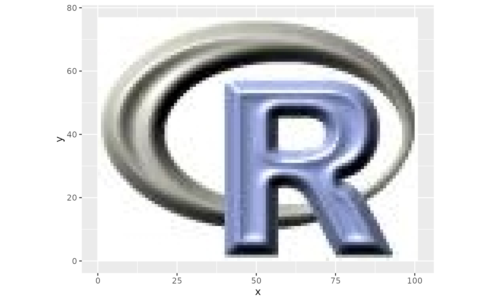

Calculates R-mode PCA for SpatRasters and returns a SpatRaster with multiple layers of PCA scores.
Usage
rasterPCA(
img,
nSamples = NULL,
nComp = nlyr(img),
spca = FALSE,
maskCheck = TRUE,
...
)Arguments
- img
SpatRaster.
- nSamples
Integer or NULL. Number of pixels to sample for PCA fitting. If NULL, all pixels will be used.
- nComp
Integer. Number of PCA components to return.
- spca
Logical. If
TRUE, perform standardized PCA. Corresponds to centered and scaled input image. This is usually beneficial for equal weighting of all layers. (FALSEby default)- maskCheck
Logical. Masks all pixels which have at least one NA (default TRUE is reccomended but introduces a slow-down, see Details when it is wise to disable maskCheck). Takes effect only if nSamples is NULL.
- ...
further arguments to be passed to writeRaster, e.g. filename.
Value
Returns a named list containing the PCA model object ($model) and a SpatRaster with the principal component layers ($object).
Details
Internally rasterPCA relies on the use of princomp (R-mode PCA). If nSamples is given the PCA will be calculated based on a random sample of pixels and then predicted for the full raster. If nSamples is NULL then the covariance matrix will be calculated first and will then be used to calculate princomp and predict the full raster. The latter is more precise, since it considers all pixels, however, it may be slower than calculating the PCA only on a subset of pixels.
Pixels with missing values in one or more bands will be set to NA. The built-in check for such pixels can lead to a slow-down of rasterPCA. However, if you make sure or know beforehand that all pixels have either only valid values or only NAs throughout all layers you can disable this check by setting maskCheck=FALSE which speeds up the computation.
Standardised PCA (SPCA) can be useful if imagery or bands of different dynamic ranges are combined. SPC uses the correlation matrix instead of the covariance matrix, which has the same effect as using normalised bands of unit variance.
Examples
library(ggplot2)
library(reshape2)
ggRGB(rlogo, 1,2,3)

## Run PCA
set.seed(25)
rpc <- rasterPCA(rlogo)
rpc
#> $call
#> rasterPCA(img = rlogo)
#>
#> $model
#> Call:
#> princomp(cor = spca, covmat = covMat)
#>
#> Standard deviations:
#> Comp.1 Comp.2 Comp.3
#> 124.814772 17.084151 1.456423
#>
#> 3 variables and 7777 observations.
#>
#> $map
#> class : SpatRaster
#> dimensions : 77, 101, 3 (nrow, ncol, nlyr)
#> resolution : 1, 1 (x, y)
#> extent : 0, 101, 0, 77 (xmin, xmax, ymin, ymax)
#> coord. ref. : +proj=merc +lon_0=0 +k=1 +x_0=0 +y_0=0 +ellps=WGS84 +towgs84=0,0,0,0,0,0,0 +units=m +no_defs
#> source(s) : memory
#> names : PC1, PC2, PC3
#> min values : -323.1956, -46.42416, -9.374094
#> max values : 118.2781, 26.11958, 6.362937
#>
#> attr(,"class")
#> [1] "rasterPCA" "RStoolbox"
## Model parameters:
summary(rpc$model)
#> Importance of components:
#> Comp.1 Comp.2 Comp.3
#> Standard deviation 124.8147718 17.08415063 1.456422555
#> Proportion of Variance 0.9814783 0.01838804 0.000133636
#> Cumulative Proportion 0.9814783 0.99986636 1.000000000
loadings(rpc$model)
#>
#> Loadings:
#> Comp.1 Comp.2 Comp.3
#> red 0.594 0.507 0.625
#> green 0.585 0.262 -0.768
#> blue 0.553 -0.821 0.141
#>
#> Comp.1 Comp.2 Comp.3
#> SS loadings 1.000 1.000 1.000
#> Proportion Var 0.333 0.333 0.333
#> Cumulative Var 0.333 0.667 1.000
ggRGB(rpc$map,1,2,3, stretch="lin", q=0)
if(require(gridExtra)){
plots <- lapply(1:3, function(x) ggR(rpc$map, x, geom_raster = TRUE))
grid.arrange(plots[[1]],plots[[2]], plots[[3]], ncol=2)
}
#> Loading required package: gridExtra